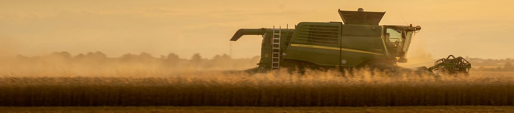

A agricultura e a pecuária são pilares essenciais para a segurança alimentar e o desenvolvimento econômico. O cultivo de alimentos e o manejo responsável dos rebanhos garantem o abastecimento das populações geram empregos e movimentam a economia. Além disso, práticas sustentáveis nesses setores ajudam a preservar os recursos naturais, promovendo um equilíbrio entre produção e meio ambiente.
A agricultura vai além da produção de alimentos. É ela que sustenta comunidades, movimenta economias e protege o solo com práticas conscientes.
Produzir com equilíbrio é garantir o amanhã.
A agricultura vai além da produção de alimentos. É ela que sustenta comunidades, movimenta economias e protege o solo com práticas conscientes.
O ciclo da vida começa no solo.
Do plantio à colheita, a inovação tem revolucionado o campo. Agricultura moderna é sinônimo de produtividade com responsabilidade.
Menos: impacto, mais alimento.
A criação de animais movimenta cadeias produtivas e fortalece regiões.
Onde há pecuária consciente, há desenvolvimento.
Mais empregos, mais renda, mais futuro.
Com técnicas modernas, é possível criar mais com menos.
A pecuária sustentável reduz impactos ambientais e melhora a eficiência.
Cuidar da terra é parte do processo.
Uma pecuaria bem manejada respeita o animal e entrega produtos de alto valor nutricional.
Animais saudáveis, alimentos confiáveis.